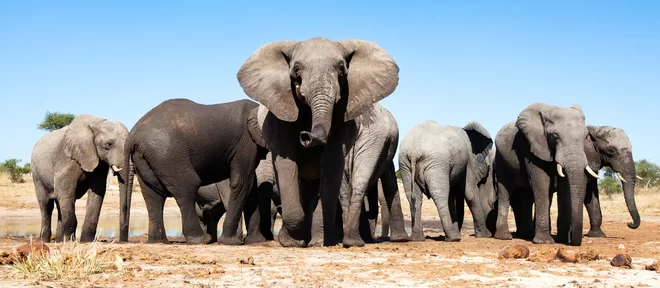
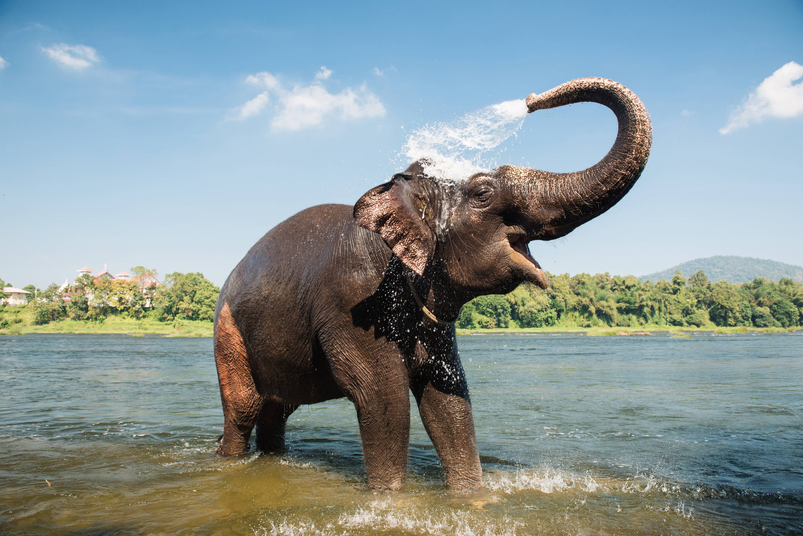

Представители ряда африканских и азиатских стран договорились о совместной защите слонов. В числе прочего соглашение предусматривает сотрудничество в поисках и арестах браконьеров и расширение полномочий природоохранных ведомств стран Черного континента в борьбе с преступными шайками, охотящимися на крупнейших сухопутных животных планеты.
Слонам угрожает уничтожение. Каждые 15 минут от рук браконьеров на Черном континенте погибает один слон. Если истребление самых крупных сухопутных животных будет продолжаться такими же темпами, то уже к 2025 году в африканских саванах не останется ни одного слона.
Танзания, к примеру, за последние три года уже потеряла половину своих слонов. В 2009 году в этой африканской стране жило, по разным оценкам, от 70 до 80 тыс. слонов, то есть почти четверть всего слоновьего поголовья Африки, а сейчас – вдвое меньше. По словам министра внутренних дел США Салли Джуэлл, объем торговли слоновьими бивнями, носорожьими рогами, шкурами и прочими трофеями незаконных сафари за последние пять лет удвоился и достиг 10 млрд долларов. По доходности этот вид преступной деятельности на четвертом месте. Бороться с браконьерами должны не только защитники животных, но и политики. На деньги от продажи слоновой кости, которую в Африке нередко называют «белым золотом джихада», финансируются террористические организации. В том числе и «Аш-Шабаб», печально «прославившийся» недавним захватом заложников в торговом центре в Найроби. О слонах ходят самые невероятные слухи. Прежде чем защищать их, неплохо бы для начала разобраться, где в них правда, а где выдумка.
Слоны обладают отличным слухом, но африканские слоны вдобавок к этому способны улавливать дрожь земли при помощи особых чувствительных клеток на ступнях ног. Слоны не только слышат звук, но и могут определить направление, откуда он идет.
Учитывая размеры слонов, не приходится удивляться, что большую часть времени они едят. За этим занятием они ежедневно проводят 16-18 часов. В арахисе нет ничего такого, что отталкивало бы этих животных или было для них противопоказано. Просто орешки очень маленькие, и для того чтобы насытиться ими, слонам не хватит и 25 часов в сутках.
Научный термин pachyderm, используемый для обозначения отряда млекопитающих, в состав которого входят и слоны с носорогами, происходит от греческого слова pachydermose, которое переводится как «толстокожий». Несмотря на большую толщину, кожа слона необыкновенно чувствительна. Настолько, что слон чувствует, когда ему на спину садится… муха.